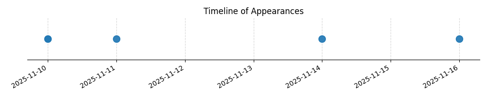

Kategorie: Letecké předpisy
Odpověď B je správná, protože podle leteckých předpisů jsou piloti a žáci povinni dbát pokynů osob vykonávajících státní dozor, jako jsou inspektoři, aby byla zajištěna bezpečnost a dodržování pravidel v leteckém provozu. Pokyny druhé osoby na palubě nebo služby radio nejsou právně závazné a nemají stejnou autoritu jako pokyny státního dozoru.

| Datum výskytu |
|---|
| 2025-11-16 |
| 2025-11-14 |
| 2025-11-11 |
| 2025-11-10 |